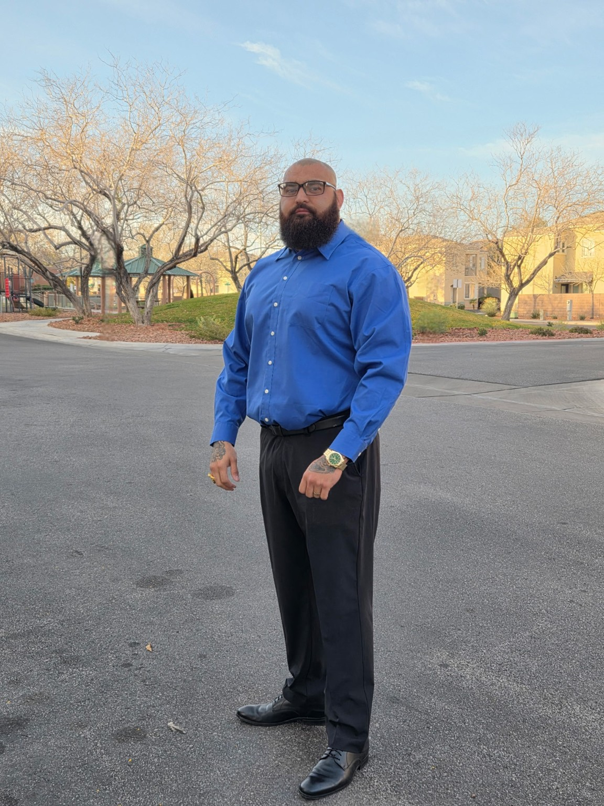
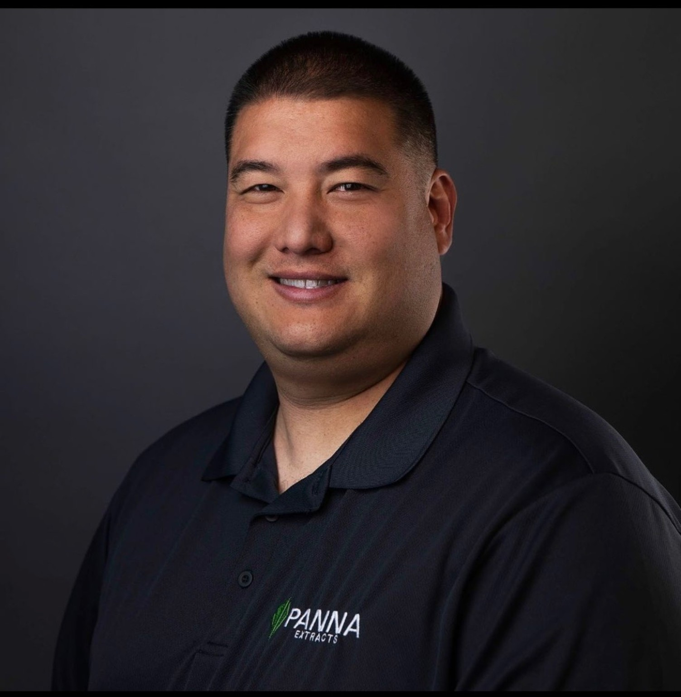

About Valor Bridge Foundation
Valor Bridge Foundation was created to support veterans by connecting them with resources, community, and real-world assistance. Our mission is rooted in service, unity, and ensuring no veteran is left without support.
Board Members

Carlos Fong
Founder & President
Carlos Fong is a first-generation Chicano Mexican American, raised by immigrant parents who came to the United States in pursuit of a better future for their son. At just 18 years old, he answered the call to serve his country by enlisting in the United States Army. Carlos served four years on active duty and an additional two years in the National Guard. During his service, he deployed to Bahrain in the Middle East and worked with Patriot missile systems. He later served as a Military Police Investigator in the Army National Guard, continuing his commitment to protecting and supporting others. Following his military career, Carlos transitioned into professional mixed martial arts, earning one world title and 17 gold medals—demonstrating the same discipline, resilience, and drive that defined his military service. Today, Carlos is a disabled veteran, entrepreneur, and nationwide cannabis advocate.
As the Founder and President of the Valor Bridge Foundation, his mission is deeply personal. During his own transition from military to civilian life, he experienced firsthand the lack of support many veterans face. That experience became the foundation for his purpose. Carlos is dedicated to ensuring that no veteran feels alone in their transition. Through Valor Bridge Foundation, he provides guidance, resources, and hands-on support—whether it’s a simple conversation, connecting veterans to critical services, or personally escorting them through VA processes to ensure they receive the care they deserve.
His mission is clear: to serve those who served us, and to stand beside every veteran—especially those fighting battles beyond the battlefield.

Kevin Tashiro
Vice President
Born and raised in Hawaii, Kevin Tashiro comes from humble beginnings that instilled a strong work ethic, resilience, and a deep commitment to service. At just 20 years old, he began his professional journey in law enforcement, gaining early experience in discipline, leadership, and community responsibility. By the age of 22, Kevin relocated to Las Vegas—an important turning point that opened the door to new opportunities and personal growth. In Las Vegas, he built a diverse and expansive network through hosting roles, connecting with people across multiple industries and communities. Since 2018, Kevin has been actively involved in the cannabis industry, contributing to its rapid evolution while continuing to grow both professionally and personally. In 2021, he expanded into the live entertainment space, helping bring communities together through concerts and events. At the core of Kevin’s journey is a strong foundation in family. Together with his spouse of over 20 years, he is a proud parent to a son and daughter, carrying those values of loyalty, commitment, and care into every aspect of his life and work.
Today, as Vice President of the Valor Bridge Foundation, Kevin is dedicated to giving back and creating meaningful impact. With a focus on community, connection, and service, he plays a vital role in advancing the Foundation’s mission to support veterans and help them successfully reintegrate into civilian life.
Kevin’s story is one of growth, perseverance, and purpose—remaining grounded while continually striving to uplift others.

Nadia Ramirez
Secretary / Treasurer
Nadia has a background in the medical field, where she worked as a medical assistant and phlebotomist for several years. She is currently continuing her education in college to become a radiologic technologist, expanding her knowledge and skills in patient care and healthcare services.
Through her role in the foundation, Nadia helps manage organization, communication, and financial responsibilities to keep operations running smoothly. She joined Valor Bridge Foundation because she is passionate about helping veterans find the resources they need and assisting them in any way she can. She is also driven by a strong desire to give back to the community and make a meaningful impact.
Frequently Asked Questions
What is Valor Bridge Foundation?
Valor Bridge Foundation is a nonprofit organization dedicated to supporting veterans by connecting them with resources, assistance, and a strong support system. Our goal is to help bridge the gap between military service and civilian life.
How are you giving back to veterans?
We give back by providing essential items like food, hygiene products, and clothing, as well as connecting veterans with programs, legal assistance, and other support services. We also work to build a community where veterans feel supported and not alone.
What is your main goal as a foundation?
Our goal is to create a reliable support network for veterans while helping meet both their immediate needs and long-term stability. We want to make sure no veteran feels overlooked or unsupported.
Who can receive help from Valor Bridge Foundation?
We aim to support veterans from all backgrounds who are in need of assistance—whether that’s financial hardship, transitioning into civilian life, or just needing access to resources.
How can I get help?
You can reach out through our contact section on the website. From there, we’ll help guide you to the right resources or assistance based on your situation.
Do you partner with other organizations?
Yes, we aim to collaborate with other organizations, businesses, and community groups to expand our reach and provide more support to veterans.
Where are you located?
We are based in Las Vegas and serve the local veteran community, with plans to expand as we grow.
How can businesses or sponsors work with you?
Businesses can support us by donating goods, services, or funding, or by partnering with us for community outreach efforts. As we grow, we will expand sponsorship opportunities.
How can I support or get involved?
There are several ways to get involved:
• Non-perishable food
• Hygiene products
• Clothing
• Monetary donations
• Volunteering your time
• Helping spread awareness
Are donations available yet?
Yes — donations are now available. Every contribution helps us support veterans through outreach, resources, and direct assistance. Your support allows us to continue building a stronger community where no veteran stands alone.
What types of donations do you accept?
We accept:
• Non-perishable food
• Hygiene products
• Clothing
• Monetary donations